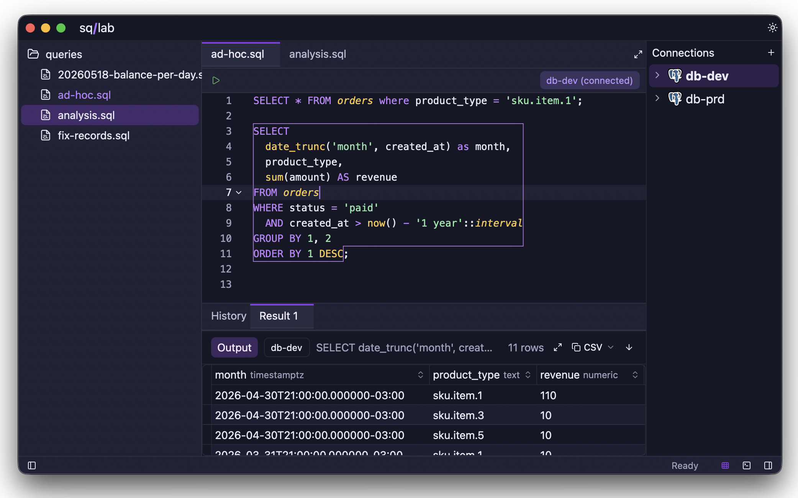
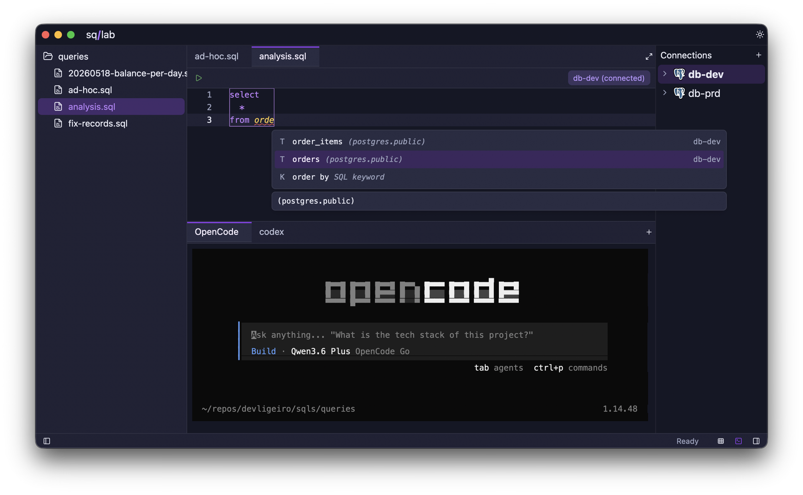

A blazing-fast SQL IDE for developers who care about craft. Query, version, and agent-code your databases — without the bloat.
A glimpse of the sq/lab workspace — fast, native, and distraction-free.


Most SQL editors are slow, bloated, or locked behind a paywall. sq/lab is none of those things.
sq/lab keeps the daily database workflow in one native workspace: inspect schemas, jump across files, complete SQL from real metadata, and store credentials in the operating system keychain.
sq/lab is a fast, open-source SQL IDE built in Rust — powered by GPUI, the same GPU-accelerated UI engine that drives the Zed editor. A workspace built for developers who treat SQL as code.
Download sq/lab for free and feel the difference on your first query.